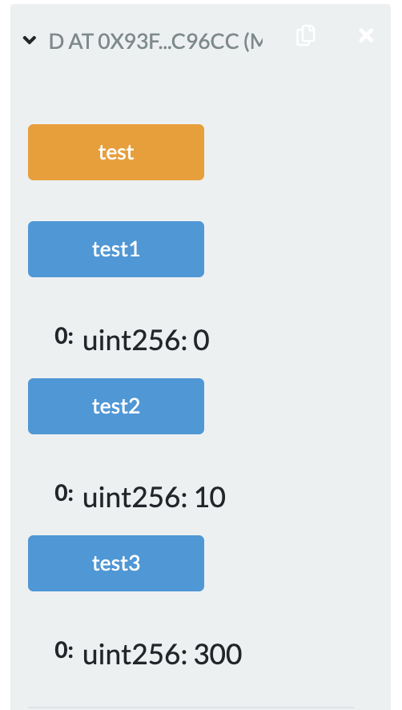
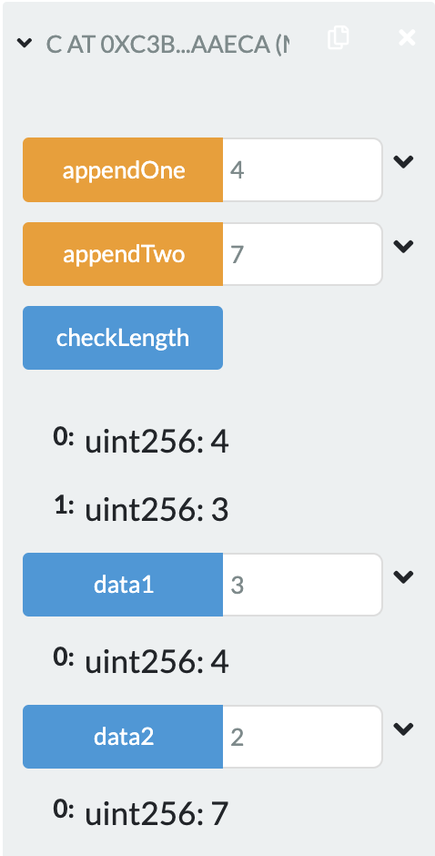
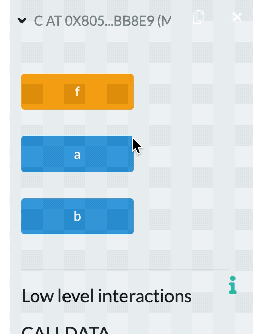

2022.2.21
Solidity语法
pragma (版本杂注)
源文件可以被版本杂注pragma所注解，表明要求的编译器版本
pragma solidity ^0.4.0;源文件将既不允许低于 0.4.0 版本的编译器编译，也不允许高于(包含) 0.5.0 版本的编译器编译(第二个条件因 使用 ^ 被添加)
import(导入其它源文件)
Solidity 所支持的导入语句import，语法同 JavaScript(从 ES6 起)非常类似
import "filename";
从“filename”中导入所有的全局符号到当前全局作用域中
import * as symbolName from "filename";
创建一个新的全局符号 symbolName，其成员均来自 “filename” 中全局符号
import {symbol1 as alias, symbol2} from "filename";
创建新的全局符号alias和symbol2，分别从"filename"引用 symbol1 和 symbol2
import "filename" as symbolName;
这条语句等同于 import * as symbolName from "filename";
布尔(bool):可能的取值为字符常量值 true 或 false
整型(int/uint):分别表示有符号和无符号的不同位数的整型变量; 支持关键字 uint8 到 uint256(无符号，从 8 位到 256 位)以及 int8 到 int256，以 8 位为步长递增
数组(Array)
数组可以在声明时指定长度(定长数组)，也可以动态调整大小(变长数组、动态数组)
对于存储型(storage)的数组来说，元素类型可以是任意的(即元素也可以是数组类型，映射类型或者结构体);对于内存型 (memory)的数组来说，元素类型不能是映射(mapping)类型
结构(Struct)
Solidity 支持通过构造结构体的形式定义新的类型
映射(Mapping)
映射可以视作哈希表 ，在实际的初始化过程中创建每个可能的 key，并将其映射到字节形式全是零的值(类型默认值)
address
地址类型存储一个 20 字节的值(以太坊地址的大小);地址类型也有成员变量，并作为所有合约的基础
address payable(v0.5.0引入)
与地址类型基本相同，不过多出了 transfer 和 send 两个成员变量
两者区别和转换
Payable 地址是可以发送 ether 的地址，而普通 address 不能允许从 payable address 到 address 的隐式转换，而反过来的直接转换是不可能的(唯一方法是通过uint160来进行中间转换)
从0.5.0版本起，合约不再是从地址类型派生而来，但如果它有payable的回退函数，那同样可以显式转换为 address 或者 address payable 类型
<address>.balance (uint256):该地址的 ether 余额，以Wei为单位
<address payable>.transfer(uint256 amount):向指定地址发送数量为 amount 的 ether(以Wei为单位)，失败时抛出异常，发送 2300 gas 的矿工费，不可调节
注意是向address send代币！
<address payable>.send(uint256 amount) returns (bool):向指定地址发送数量为 amount的 ether(以Wei为单位)，失败时返回 false，发送 2300 gas 的矿工费用，不可调节
注意是向address send代币！
send没有异常，所以默认是执行成功的！
<address>.call(bytes memory) returns (bool, bytes memory):发出底层函数 CALL，失败时返回 false，发送所有可用 gas，可调节
失败没有异常
<address>.delegatecall(bytes memory) returns (bool, bytes memory):发出底层函数 DELEGATECALL，代理调用，失败时返回 false，发送所有可用 gas，可调节
<address>.staticcall(bytes memory) returns (bool, bytes memory):发出底层函数 STATICCALL ，失败时返回 false，发送所有可用 gas，可调节
地址成员变量用法
balance 和 transfer
可以使用balance属性来查询一个地址的余额，可以使用transfer函数向一个payable地址发送 以太币Ether(以 wei 为单位)
solidity
address payable x = address(0x123);
address myAddress = address(this);
if (x.balance < 10 && myAddress.balance >= 10)
x.transfer(10);
send
send 是 transfer 的低级版本。如果执行失败，当前的合约不会因为异 常而终止，但 send 会返回 false
call
也可以用call来实现转币的操作，通过添加.gas()和.value()修饰器:
solidity
nameReg.call.gas(1000000).value(1 ether)(abi.encodeWithSignature("register(string)", "MyName"));
定长字符数组
节序列
有一个.length属性，返回数组长度(只读)
solidity
function test() public pure return(unit){ // 最后函数输出17
bytes17 a;
return a.length;
}
变长字符数组
pragma solidity >=0.4.0 <0.6.0;
contract Purchase {
// 枚举类型、结构类型、状态变量需要在函数外声明！！
enum State { Created, Locked, Inactive }
function test() public pure return(unit){ // 最后函数输出17
State st = State.Created;
return uint(st); // Created, Locked, Inactive 分别是0,1,2
}
}
例如，一个由5个uint动态数组组成的数组是uint[][5](定义的时候，和C语言顺序是不一样的)
要访问第三个动态数组中的第二个uint，可以使用x[2][1]（访问的时候，和C语言顺序是一样的）
越界访问数组，会导致调用失败回退
如果要添加新元素，则必须使用.push()或将.length增大, (如果存在storage里边，长度可以变，如果存在memory里边，长度不能变)
变长的storage数组和bytes(不包括string)有一个push()方法。可以将一个新元素附加到数组末端，返回值为当前长度
数组示例
pragma solidity >=0.4.16 <0.6.0;
contract C {
function f(uint len) public pure {
uint[] memory a = new uint[](7);
bytes memory b = new bytes(len);
assert(a.length == 7);
assert(b.length == len);
a[6] = 8;
}
}
pragma solidity >=0.4.0 <0.6.0;
contract Ballot {
struct Voter {
uint weight;
bool voted;
uint vote;
}
}
mapping(_KeyType => _ValueType)pragma solidity >=0.4.0 <0.6.0;
contract MappingExample {
mapping(address => uint) public balances;
function update(uint newBalance) public {
balances[msg.sender] = newBalance;
}
}
contract MappingUser {
function f() public returns (uint) {
MappingExample m = new MappingExample();
m.update(100);
return m.balances(address(this));
}
}
pragma solidity ^0.8.0;
contract C{
mapping (address=>uint) public balances;
constructor(){
balances[address(this)]=300;
}
function update(uint amount)public{
balances[msg.sender]=amount;
}
}
contract D{
uint public test1;
uint public test2;
uint public test3;
function test()public{
C c = new C();
c.update(10);
test1 = c.balances(msg.sender);
test2 = c.balances(address(this));
test3 = c.balances(address(c));
}
}
应该返回300，10，0.因为c.update传入的参数，是调用他的地址，address(c)是c的地址，在合约C创建的时候，c的balances就是300；address(this)的this是D，fun()中的c.update传入了D的地址，所以d的balances经过updated成了10；c.balances(msg.sender)获取的是用户的地址对应的balances，并没有设置过，是0。
运行结果贴图：

强制指定的数据位置
外部函数的参数(不包括返回参数):calldata;
状态变量:storage
默认数据位置
pragma solidity ^0.8.0;
contract C {
uint[] public data1; // 默认存在storgae,不定长度只存头，剩下的散列出去
uint[] public data2; // 默认存在storgae
function checkLength() view public returns(uint,uint){
return (data1.length,data2.length);
}
function appendOne(uint8 data) public{
append(data1,data);
}
function appendTwo(uint8 data) public {
append(data2,data);
}
function append(uint[] storage d,uint8 data) internal {
// d只是data1或data2的引用
d.push(data);
}
}
运行截图：
（appendOne和appendTwo已经输入了多个数，截图展示的是最后一个；data1和data2是输入下标点击显示对应内容）

// 下面代码包含一个错误
pragma solidity ^0.4.0;
contract C {
uint public a;
uint public b;
uint[] data;
function f() public {
uint[] x;
x.push(2);
data = x;
}
}

这是因为uint[] x;定义的时候没有初始化，形成了野指针，指针默认指向程序开头。长度可变的数组在存储过程中，会存储这个数组的长度。所以会产生错误。
// 下面代码编译错误
pragma solidity ^0.4.0;
contract C {
uint[] x;
function f(uint[] memoryArray) public {
// 这个是可以的，memory给storage类型赋值：会进行数据的拷贝
x = memoryArray;
// 这个是可以的，这个局部变量y只当一个引用
uint[] y = x;
// 如果没越界是可以的
y[7];
// 是可以的，storage的可变数组可以直接用.length
y.length = 2;
// 是可以的，软删除（把长度置为零）
delete x;
// TypeError: Type uint256[] memory is not implicitly convertible to expected type uint256[] storage pointer.
// memory类型的变长数组（可以认为无限大），不能直接指向y这一块很小的内存
y = memoryArray;
delete y;
g(x);
h(x);
}
// 如果传入类型为storage，函数类型只能是internal或private而不能是public
function g(uint[] storage storageArray) internal {}
function h(uint[] memoryArray) public {}
}
function f(uint[] memoryArray) public {在0.8.n里边，需要指定成calldata或memory!uint[] y = x;在0.8.n里边也不被允许，需要指定类型。如果类型为memory后边的y.length=2就又错了$$\to$$memory类型的变量给定了后就不能变了y = memoryArray中的`y如果是storage类型的，就会失败；只有memory类型才会成功pragma solidity >0.4.22;
contract Honeypot{
uint luckyNum = 52;
uint public last;
struct Guess{ address player; uint number; }
Guess[] public guessHistory;
address owner = msg.sender;
function guess(uint _num) public payable{
Guess newGuess;
newGuess.player = msg.sender;
newGuess.number = _num;
guessHistory.push( newGuess );
if( _num == luckyNum )
msg.sender.transfer( msg.value * 2 );
last = now;
}
}
Guess newGuess;错误在这里！还是指针没赋初始值
函数的值类型有两类: 内部(internal)函数和外部(external)函数
external，public ，internal 或者 private; 对于状态变量,不能设置为 external ，默认是 internal。external:外部函数作为合约接口的一部分，意味着我们可以从其他合约和交易中调用。一个外部函数f不能从内部调用(即 f 不起作用，但 this.f() 可以)。 当收到大量数据的时候, 外部函数有时候会更有效率。public :public 函数是合约接口的一部分，可以在内部或通过消息调用。 对于 public 状态变量，会自动生成一个 getter 函数。internal:这些函数和状态变量只能是内部访问(即从当前合约内部或从它派生的合约访问)，不使用 this 调用。private:private函数和状态变量仅在当前定义它们的合约中使用，并且不能被派生合约使用。
函数可见性实例
pragma solidity >=0.4.16 <0.6.0;
contract C {
function f(uint a) private pure returns (uint b) {
return a + 1;
}
function setData(uint a) internal {
data = a;
}
uint public data;
function x() public {
data = 3; // 内部访问
uint val = this.data(); // 外部访问
uint val2 = f(data);
}
}
pure: 纯函数，不允许修改或访问状态view: 不允许修改状态payable: 允许从消息调用中接收以太币Etherconstant: 与view相同，一般只修饰状态变量，不允许赋值 (除初始化以外)
以下情况被认为是修改状态:
使用包含特定操作码的内联汇编。
以下被认为是从状态中进行读取:
使用修饰器modifier可以轻松改变函数的行为。例如，它们可以在执行函数之前自动检查某个条件。修饰器modifier 是合约的可继承属性，并可能被派生合约覆盖
如果同一个函数有多个修饰器modifier，它们之间以空格隔开，修饰器modifier会依次检查执行。
Modifier示例
pragma solidity >=0.4.22 <0.6.0;
contract Purchase {
address public seller;
modifier onlySeller() { // Modifier
require( msg.sender == seller, "Only seller can call." );
_; // 这是一个占位符，代表被修饰代码
}
function abort() public view onlySeller returns(...){ // Modifier usage
// ...
}
}
如果在一个到合约的调用中，没有其他函数与给定的函数标识符匹配 (或没有提供调用数据)，那么这个函数(fallback 函数)会被执行
每当合约收到以太币(没有任何数据)，回退函数就会执行。此外， 为了接收以太币，fallback 函数必须标记为 payable。如果不存在这样的函数，则合约不能通过常规交易接收以太币
pragma solidity >0.4.99 <0.6.0;
contract Sink {
// 这是一个回退函数
function() external payable { }
}
contract Test {
// 这是一个回退函数
function() external { x = 1; }
uint x;
}
contract Caller {
// 把合约当成一个参数传了进来
function callTest(Test test) public returns (bool) {
// 调用了一个没有定义的函数来触发回退函数
(bool success,) = address(test).call(abi.encodeWithSignature("nonExistingFunction()"));
require(success);
// 把一个普通的地址类型，转换成一个payable的地址类型
address payable testPayable = address(uint160(address(test)));
return testPayable.send(2 ether);
}
}
• 事件是以太坊EVM提供的一种日志基础设施。事件可以用来做操作记录，存储为日志。也可以用来实现一些交互功能，比如通知UI，返回函数调用结果等
• 当定义的事件触发时，我们可以将事件存储到EVM的交易日志中，日志是区块链中的一种特殊数据结构;日志与合约关联，与合约的存储合并存入区块链中;只要某个区块可以访问，其相关的日志就可以访 问;但在合约中，我们不能直接访问日志和事件数据
• 可以通过日志实现简单支付验证SPV(SimplifiedPayment Verification)，如果一个外部实体提供了一个带有这种证明的合约，它可以检查日志是否真实存在于区块链中
以太币 Ether 单位之间的换算就是在数字后边加上 wei、 finney、 szabo 或 ether 来实现的，如果后面没有单位，缺省为 Wei。例如 2 ether == 2000 finney 的逻辑判断值为 true
时间:秒是缺省时间单位，在时间单位之间，数字后面有 seconds、 minutes、 hours、 days、 weeks 和 years 的可以进行换算。规定一年365天。
这些后缀不能直接用在变量后边。如果想用时间单位(例如 days)来将输入变量 换算为时间，你可以用如下方式来完成:
function f(uint start, uint daysAfter) public {
if (now >= start + daysAfter * 1 days) { // ... }
}